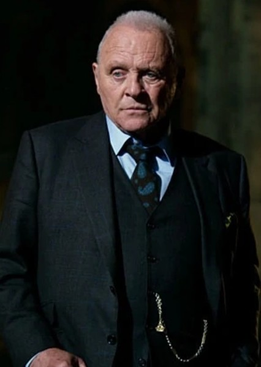
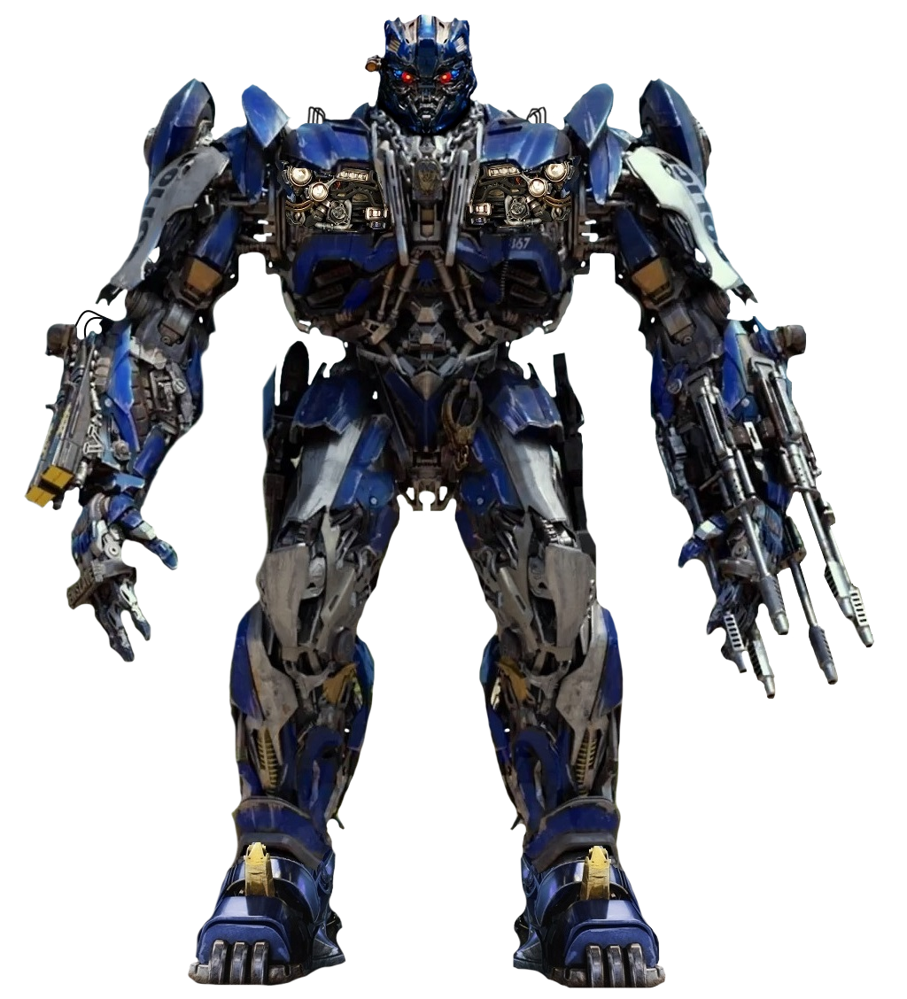

| Personaggio |
Descrizione |
Immagine |
| Cade Yeager |
Interpretato da Mark Wahlberg.
Cade è Determinato, protettivo e pragmatico. Cade è un uomo comune che si trova a gestire responsabilità enormi,
mantenendo sempre la sua lealtà verso gli Autobot. Cade vive nascosto in un deposito di rottami, proteggendo gli Autobot rimasti.
Riceve un misterioso talismano cavalleresco da un Transformer morente, che lo designa come “Ultimo Cavaliere. |
 |
| Izabella |
Interpretata da Isabela Moner (oggi conosciuta come Isabela Merced).
Ragazza orfana che vive tra le rovine di Chicago dopo la battaglia dei Transformers.
Coraggiosa e indipendente, nonostante la giovane età. Empatica e protettiva, soprattutto verso il piccolo Autobot Squeaks.
Determinata e resiliente, rappresenta la capacità di sopravvivere e adattarsi in un mondo devastato. |
 |
| Sir Edmund Burton |
Interpretato da Anthony Hopkins.
Lord inglese e ultimo discendente di una lunga stirpe di custodi dei segreti dei Transformers.
Colto, enigmatico e ironico. Alterna momenti di grande serietà a battute eccentriche, tipiche dello stile di Hopkins.
Sir Edmund Burton rivela che i Transformers sono presenti sulla Terra da secoli e che hanno influenzato la storia umana.
Spiega il legame tra i Cavalieri di Re Artù e i Transformers, introducendo la mitologia che dà il titolo al film. |
 |
| Viviane Wembly |
Interpretata da Laura Haddock.
Professoressa di Oxford, esperta di storia e mitologia.
Intelligente, determinata e inizialmente scettica. Viviane è una donna indipendente che si trova coinvolta
in una missione epica, scoprendo di avere un ruolo chiave nel destino della Terra.
|
 |
| Colonnello Lennox |
Interpretato da Josh Duhamel.
Ufficiale militare, membro della TRF, l’organizzazione umana creata per monitorare e combattere i Transformers.
Professionale, leale e pragmatico. Lennox è un soldato che cerca di bilanciare il dovere verso il suo paese con
la consapevolezza che non tutti i Transformers sono nemici.
|
 |
| Seymour Simmons |
Interpretato da John Turturro.
Ex-agente della Sector Seven, ora rifugiato a Cuba.
Eccentrico, ironico e spesso sopra le righe. Simmons è un personaggio comico ma anche astuto, capace di fornire informazioni cruciali.
Non partecipa direttamente alle battaglie, ma svolge un ruolo da “consigliere” e informatore. |
 |
Prime
| Personaggio |
Descrizione |
Immagine |
| Quintessa |
Doppiata da Gemma Chan.
Autoproclamata “Creatrice” dei Transformers, Quintessa è Subdola, manipolatrice e apparentemente divina.
Quintessa si presenta come una divinità aliena, convinta di avere il diritto di controllare e plasmare i Transformers.
Ha l'abilità di manipolazione mentale, usato per corrompere Optimus Prime; energia cosmica e capacità di controllare
la tecnologia dei Transformers e conoscenze antiche, legata alla creazione stessa dei Cybertroniani. |

|
| Nemesis Prime(Optimus manipolato) |
Doppiato da Peter Cullen dagli anni 80.
In questo film Optimus viene manipolato da Quintessa che lo transforma in un suo schiavo e gli da il nome di Nemisis Prime.
Perde la compassione tipica di Optimus, diventando un guerriero che esegue ordini senza esitazione.
È sotto il controllo mentale di Quintessa, quindi la sua volontà è piegata. Non agisce per ideali, ma per imposizione.
Combatte con brutalità, persino contro gli Autobot e gli umani che prima difendeva.
Si transforma in un Camion Western Star 5700XE.
Combatte con spada e scudo cavallereschi e possiede una potenza fisica e resistenza superiori. |
 |
Autobot
| Personaggio |
Descrizione |
Immagine |
| Bumblebee |
Leale e coraggioso, sempre pronto a proteggere gli umani e i suoi compagni, è ironico e giovanile, spesso alleggerisce i momenti drammatici
con il suo modo di comunicare. Determinato e indipendente infatti in questo film dimostra di poter guidare gli Autobot anche senza Optimus.
Si transforma in una Chevrolet Camaro gialla con dettagli neri.
Combatte con cannoni integrati e grande agilità in combattimento e in questo film ha la capacità di smontarsi e rimontarsi rapidamente grazie a un nuovo upgrade. |
 |
| Hound |
Viene doppiato da John Goodman.
Soldato veterano degli Autobot, pesantemente armato e sempre pronto alla battaglia.
Burbero, ironico e un po’ sopra le righe. Ama le armi e non perde occasione di vantarsi del suo arsenale.
Nonostante il tono comico, è un combattente leale e determinato. Si transforma in una Mercedes-Benz Unimog verde,
più compatto ma sempre corazzato.
Porta con sé un vasto assortimento di armi da fuoco e granate, tanto da sembrare un arsenale ambulante. |
 |
| Drift |
Viene doppiato da Ken Watanabe.
Guerriero disciplinato e maestro di spada, parte della nuova squadra di Optimus Prime.
Filosofico, riflessivo e guidato da un forte senso dell’onore. È severo con sé stesso e con gli altri, incarnando la figura del samurai
che ha abbandonato la via oscura dei Decepticon per seguire Optimus.
Si transforma in una Mercedes-AMG GT R nera e rossa. Combatte con Katane e shuriken meccanici. È un combattente corpo a corpo eccezionale,
con uno stile che richiama le arti marziali. |
 |
| Crosshairs |
Viene doppiato da John DiMaggio.
Tiratore scelto e combattente acrobatico degli Autobot.
Sarcastico, indipendente e spesso polemico. Non ha la disciplina di Drift né la serietà di Optimus,
ma compensa con abilità e coraggio. È il “outsider” del gruppo, che ama fare le cose a modo suo.
Si transforma in una Chevrolet Corvette C7 Stingray verde, elegante e sportiva. Specialista in combattimenti acrobatici e armi da fuoco.
Il suo stile è più “da cecchino” e da guerrigliero urbano, rispetto ai combattenti pesanti come Hound. |
 |
| Hot Rod |
Viene doppiato da Omar Sy.
Hot rod è energico e impulsivo, con un atteggiamento giovanile, ironico e un po’ arrogante, ma fondamentalmente leale.
Si transforma in una Lamborghini Centenario arancione/rossa, sportiva e aggressiva.
Combatte con un'arma speciale capace di manipolare il tempo con un’arma che rallenta i movimenti degli avversari. |
 |
| Cogman |
Doppiato da Jim Carter.
Ha un'atteggiamento ironico e sofisticato, con modi da maggiordomo inglese.Eccentrico e teatrale, spesso esagera nelle sue reazioni.
Leale e protettivo verso Burton, ma anche aggressivo quando serve. Possiede una personalità “multistrato" ovvero che
può passare dal tono educato e servizievole a esplosioni di violenza improvvisa.
Possiede una grande agilità e forza nonostante la sua statura relativamente minuta(è alto 1,68).
Esperto nel combattimento corpo a corpo. |
 |
| Squeaks |
Piccolo Autobot rifugiato, compagno di Izabella, la giovane umana che lo protegge.
È Timido e impacciato, spesso visto come “debole”, Leale e coraggioso, disposto a rischiare la vita per i suoi amici.
Innocente e tenero, con un tono comico che alleggerisce la tensione del film.
Si transforma in uno Scooter Vespa azzurro, danneggiato e malridotto.
Non ha grandi poteri offensivi, ma dimostra ingegno e determinazione.
|
 |
Decepticon
| Personaggio |
Descrizione |
Immagine |
| Megatron |
Doppiato da Frank Welker.
Megatron è spietato e autoritario, guidato da un desiderio costante di dominio. Strategico e manipolatore,
capace di negoziare persino con gli umani per ottenere vantaggi. Si transforma in un Jet da combattimento Cybertroniano.
Combatte con Spada massiccia e potenza fisica devastante ed è dotato di abilità aeree e grande resistenza. |
 |
| Barricade |
Doppiato da Jess Harnell.
Barricade è Sadico e aggressivo, ama intimidire e cacciare gli umani, e leale a Megatron, ma con un atteggiamento da sicario più che da stratega.
Opportunista e crudele, incarna la faccia “urbana” della minaccia Decepticon. Si transforma in una Ford Mustang Saleen S281,
in versione auto della polizia nera con scritte minacciose (“To punish and enslave”). Combatte con mitragliatrici e armi da fuoco integrate;
grande velocità e potenza come veicolo ed è capace di infiltrarsi grazie alla sua modalita veicolo da auto della polizia. |
 |
| Nitro Zeus |
Doppiato da John DiMaggio.
Nitro Zeus è vanitoso e teatrale, ama mettersi in mostra; è aggressivo e spavaldo, con atteggiamenti da “rockstar ribelle”.
Leale a Megatron, ma più interessato a divertirsi e distruggere che a strategie complesse.
Si transforma in un Jet da combattimento F-16 Fighting Falcon.
Combatte utilizzando delle armi pesanti. |
 |
| Onslaught |
Violento e diretto, con un atteggiamento da “bruto” della squadra; leale a Megatron, ma privo di sottigliezze infatti
preferisce la forza bruta alla strategia; spietato e aggressivo, incarnando la tipica mentalità da guerriero Decepticon.
Si transforma in un Camion Western Star 4900 verde scuro. Possiede una grande potenza fisica e resistenzae armi pesanti
integrate nel corpo e nel veicolo. |
 |
| Mohawk |
Doppiato da Reno Wilson.
Mohawk è Ribelle e caotico, con atteggiamento da punk, vanitoso e teatrale, ama mettersi in mostra.
Leale a Megatron, ma più per spirito di appartenenza che per disciplina.
Si transforma in una motocicletta sportiva blu.
Ha una grande velocità e agilità come moto, combatte con armi leggere e capacità di attacchi rapidi.
Il suo stile di combattimento basato sulla mobilità e sull’imprevedibilità. |

|
| Dreadbot |
Caotico e violento, con atteggiamento da delinquente urbano.
Ribelle e imprevedibile, più interessato al caos che a un vero piano strategico.
È rappresentato come un criminale già noto agli umani, con un passato da rapinatore di banche.
Si transforma in un furgoncino Volkswagen Type 2 (furgoncino hippie) rosso e nero. |

|